KRK
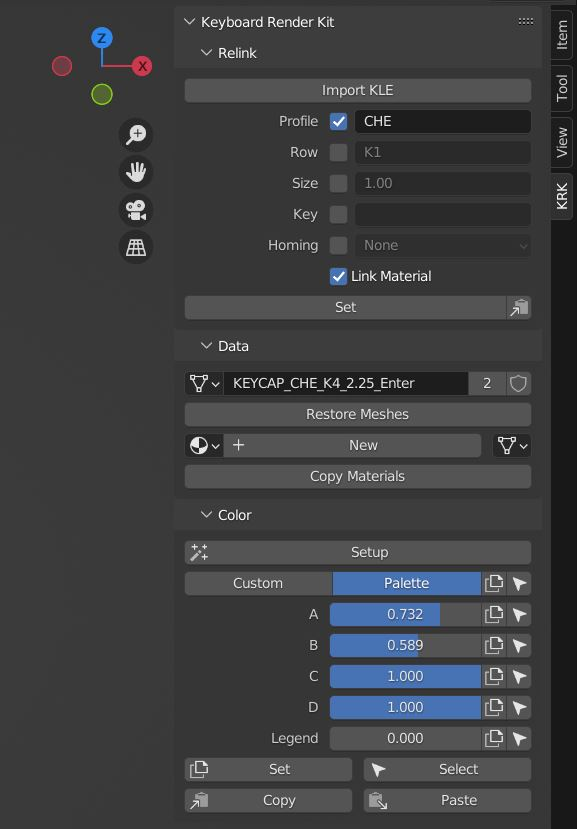
Das KRK-Panel befindet sich in der Seitenleiste (N) und ist in vier Abschnitte unterteilt: Relink, Daten, Farbe und Eigenschaften. Die letzten beiden sind nur sichtbar, wenn die entsprechenden Eigenschaften verfügbar sind.
Relinken
Relink ist ein Objektdaten-Manager, der entwickelt wurde, um schnell zwischen Keycap-Profile, Zeilen, Größen, Tasten und Homing-Optionen zu wechseln. Jede Option, die das Kontrollkästchen aktiviert hat, wird berücksichtigt, wenn Sie die Schaltfläche Setzen drücken.
Importieren KLE
KRK hat die Möglichkeit, Keyboard Layout Editor JSON-Dateien zu importieren. KLE nennt seine Objekte nicht, so dass der Importeur versucht, die Tasten basierend auf den Beschriftung und der Zeile (K1-K6) zu interpretieren und setzt einen Platzhalter, der es kann. Verwenden Sie diese KLE als Beispiel oder als Grundlage, um Ihr eigenes zu generieren:
http://www.keyboard-layout-editor.com/#/gists/f7528ebe1348daab7abc45bc2f662c8a
Profil
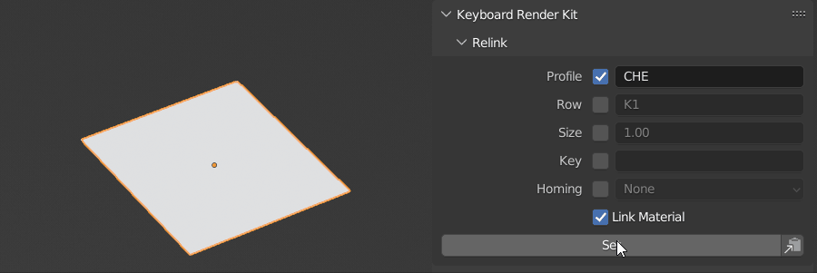
Verfügbare Profile und deren Präfixe werden in der Profilsammlung im Outliner aufgelistet, während Zeilen und andere Optionen, für die Sie eine Intuition entwickeln. Geben Sie die Option in das entsprechende Feld (case sensitive) mit dem Kontrollkästchen aktiviert und drücken Sie Set, um die Option einzustellen.
Zeile
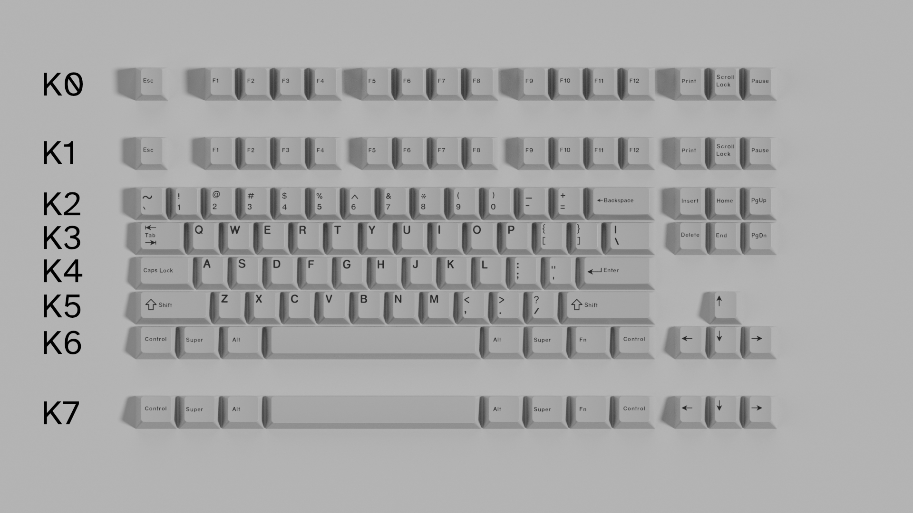
Aufgrund der Tatsache, dass verschiedene Hersteller und Keycap-Profile unterschiedliche Zeilennummerierungssysteme verwenden, führt KRK eine weitere, basierend auf der tatsächlichen Position auf der Tastatur ab der Rückseite.
Profil |
Fakultativ |
Zeilen |
Fakultativ |
|---|---|---|---|
KRK |
0 |
1-2-3-4-5-6 |
7 |
Cherry |
0 |
1-1-2-3-4-4 |
5 |
Gleichstrom-Gleichstrom-Wechselstrom-Wechselstrom-Wechselstrom-Wechselstrom-Wechselstrom-Wechselstrom-Wechselstrom-Wechselstrom-Wechselstrom-Wechselstrom-Wechselstrom-Wechselstrom-Wechselstrom-Wechselstrom-Wechselstrom-Wechselstrom-Wechselstrom-Wechselstrom-Wechselstrom-Wechselstrom-Wechselstrom-Wechselstrom-Wechselstrom-Wechselstrom-Wechselstrom-Wechselstrom-Wechselstrom-Wechselstrom-Wechselstrom-Wechselstrom-Wechselstrom-Wechselstrom-Wechselstrom-Wechselstrom-Wechselstrom-Wechselstrom-Wechselstrom-Wechselstrom-Wechselstrom-Wechselstrom-Wechselstrom-Wechselstrom-Wechselstrom-Wechselstrom-Wechselstrom-Wechselstrom-Wechselstrom-Wechselstrom-Wechselstrom-Wechselstrom-Wechselstrom-Wechselstrom-Wechselstrom-Wechselstrom-Wechselstrom-Wechselstrom-Wechselstrom-Wechselstrom-Wechselstrom-Wechselstrom-Wechselstrom-Wechselstrom-Wechselstrom-Wechselstrom-Wechselstrom-Wechselstrom-Wechselstrom-Wechselstrom-Wechselstrom-Wechselstrom-Gleichstrom-Wechselstrom-Wechselstrom-Wechselstrom-Wechselstrom-Wechselstrom-Wechselstrom-Wechselstrom-Wechselstrom-Wechselstrom-Wechselstrom-Wechselstrom-Wechselstrom-Wechselstrom-Wechselstrom-Wechselstrom-Wechselstrom-Wechselstrom-Wechselstrom-Wechselstrom-Wechselstrom-Wechselstrom-Wechselstrom-Wechsel |
5 |
1-1-2-3-4-4 |
|
DSA |
Einheitlich |
||
DSS |
1-1-2-3-4-3 |
4 |
|
KAM |
Einheitlich |
||
KAT |
5 |
4-4-3-2-1-1 |
|
OEM |
1-1-2-3-4-4 |
||
SA |
1-1-2-3-4-3 |
4 |
Einige Profile haben eine auswechselbare erste und/oder letzte Reihe.
(Einheitlich in der Tabelle bedeutet, dass alle Zeilen die gleiche Höhe haben; geben Sie sie ein wie-ist.)
Größe
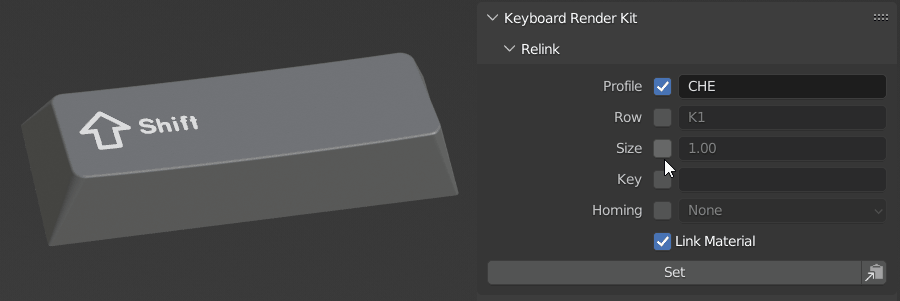
Sie können die Größe einer Keycap ändern, indem Sie die Größe der vier Zeicheneinheiten in das Feld eingeben. Wenn die Zielgeometrie verfügbar ist, ändert sie sich in die gewünschte Größe.
Schlüssel
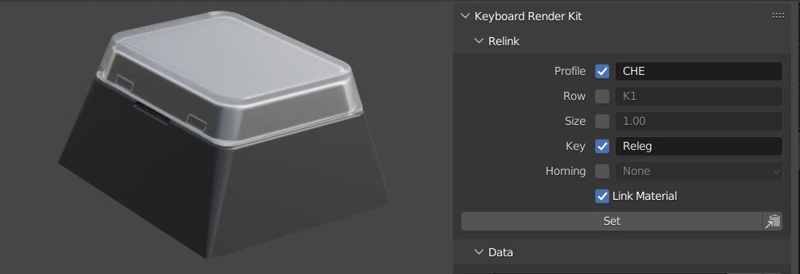
Geben Sie den Keycap-Namen in das Feld ein, um Keycaps zu einem anderen Keycap zu wechseln. Dies ist praktisch, um auf ein relegierbares (Releg), ein leeres Keycap (Blank) oder Fenster (*_WIN) zu wechseln.
Homing
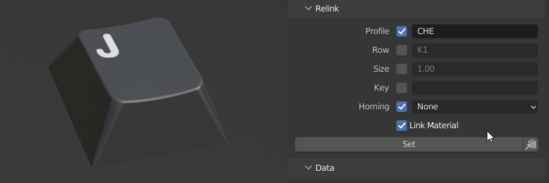
Sie können den Typ des Homing-Schlüssels zwischen bar/nub/scoop ändern, indem Sie diesen Dropdown verwenden und auf Set klicken.
Verbindungsmaterial
Link Material ist eine Option, die es Ihnen erlaubt, das aktuell angewendete Material an das Ziel Objektdaten zu übertragen. Sie möchten dies möglicherweise ein- oder ausschalten, je nachdem, was das gewünschte Ergebnis ist. Wenn Sie zum Beispiel auf das Platzhalter-Profil (PLA) gewechselt haben, möchten Sie, dass die Option Link Material ausgeschaltet wird, damit die Capsmat nicht auf die Platzhalter übertragen wird.
Einstellungen kopieren
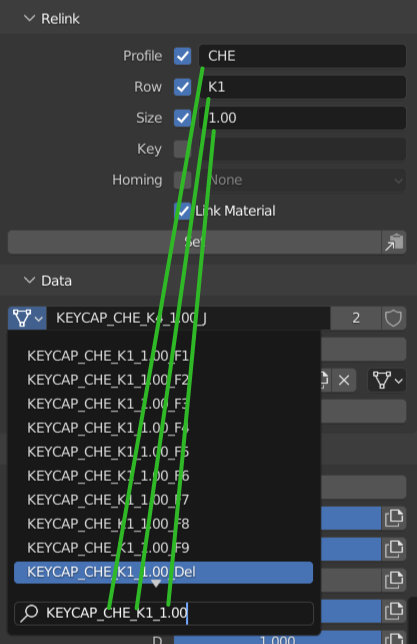
Auf der rechten Seite der Schaltfläche Set befindet sich die Schaltfläche Einstellungen kopieren, die Ihnen hilft, den Objektdaten-Namen in den Objektdaten-Dropdown zu kopieren, um bei der Suche nach einem bestimmten Schlüssel zu helfen.
In den folgenden Abschnitten werden nur Optionen für das aktive (Highlighted) Objekt angezeigt.
Daten
Die Daten spiegeln die Objektdaten und Materialzuweisungsabschnitte aus dem Eigenschaften-Panel wider, um sie leichter zugänglich zu machen.
Suchen Sie einfach durch Objektdaten, um das aktive Objektdaten durch ein anderes zu ersetzen. Z.B. Duplikat oder Instanz ein Keycap und machen Sie die Kopie zu einem Switch oder Stabilisator.
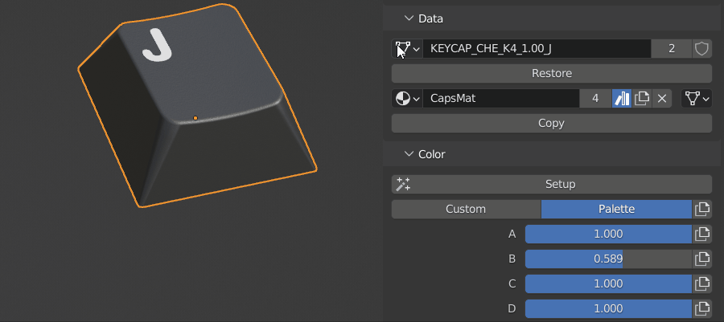
Restore Meshes können verwendet werden, wenn ein Keycap nicht wiederverknüpft werden kann, weil es dupliziert, importiert oder eingefügt wurde. Es verbindet es mit der ähnlich genannten Version, die bereits in der Datei ist. Wenn Sie den importierten als Basis verwenden möchten, dann benennen Sie seine Objektdaten um, um.001 am Ende nicht zu haben.
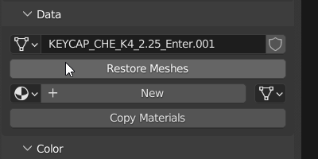
Restore Collections erscheint nur, wenn Sie ein Collection-Asset ausgewählt haben. Dies ermöglicht es, es in einen editierbaren Zustand wiederherzustellen.
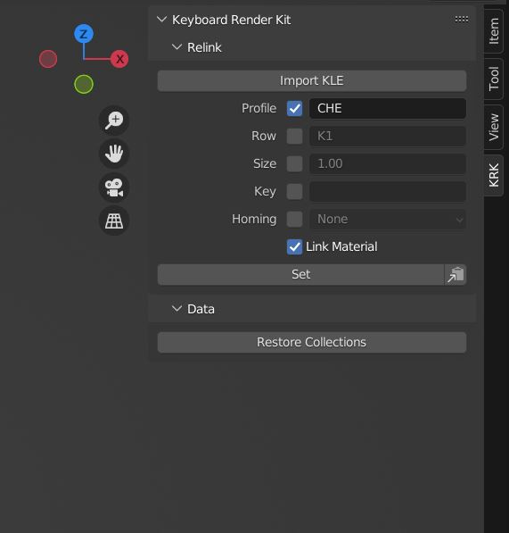
Die Schaltfläche Kopieren verbindet hier das Material aus dem aktiven Keycap-Objekt mit allen anderen ausgewählten Keycaps-Objekten und ignoriert dabei nicht-Keycap-Objekten.
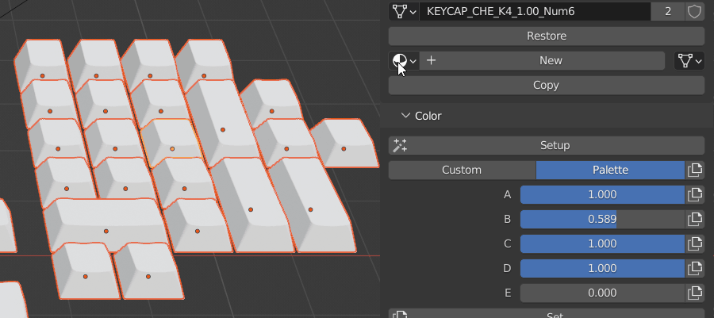
Farbe
Farbe ist ein Farb- und Palettenverwaltungssystem, das Ihnen hilft, die Farbaspekte Ihrer Capsmat zu kontrollieren. Es wird nur angezeigt, wenn Farbeigenschaften verfügbar sind. Wenn Sie ein Keycap ausgewählt haben, das keine Farbeigenschaften enthält, steht die Einrichtungstaste zur Verfügung, um alle notwendigen Eigenschaften auf das Objekt Keycap anzuwenden.
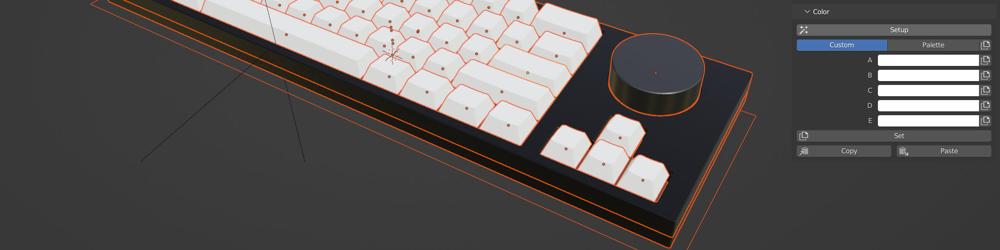
Mit dem Custom/Palette-Switcher können Sie Switch zwischen den benutzerdefinierten Farb- und Paletten-Workflows wählen. Mit den Farben A-E und Paletten-Slidern A-E können Sie diese Aspekte der Capsmat pro Objekt über die Paletten-Node-Gruppen steuern. Wählen Sie Ihre Optionen und drücken Sie Set, um sie auf alle ausgewählten Keycap-Objekte zu übertragen oder drücken Sie die einzelnen Kopiertasten, um sie auf eine Option zu begrenzen. Kopieren und Einfügen-Buttons sind unten, um einen Index von Optionen für alle ausgewählten Objekte zu erstellen und zurückzurufen.
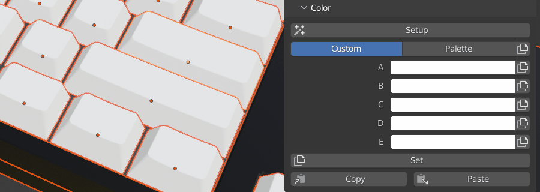
Eigenschaften
Eigenschaften sind auch nur sichtbar, wenn benutzerdefinierte Eigenschaften verfügbar sind. Für die USB-Kabel zeigt es die Kabeloptionen wie z.B. Flecht-/Techflex- und Heatshrink-Farbe für die Köpfe an. Wenn das Deskmat ausgewählt ist, wird stattdessen die Dimensions- und Einfassungsoptionen angezeigt.
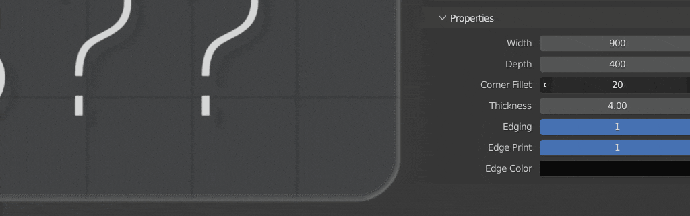